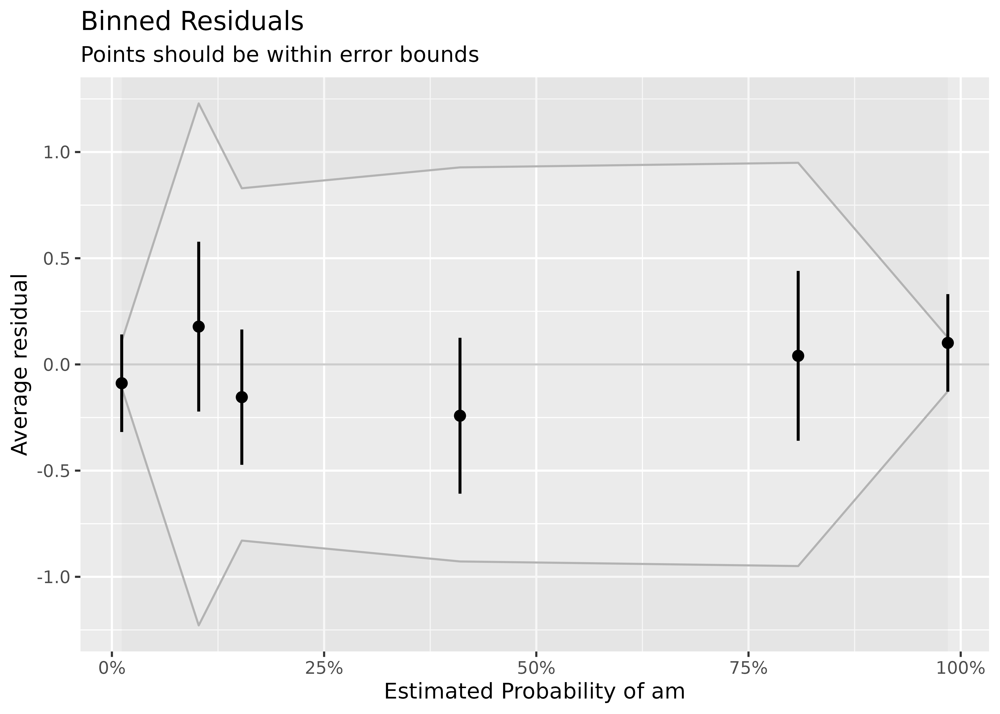
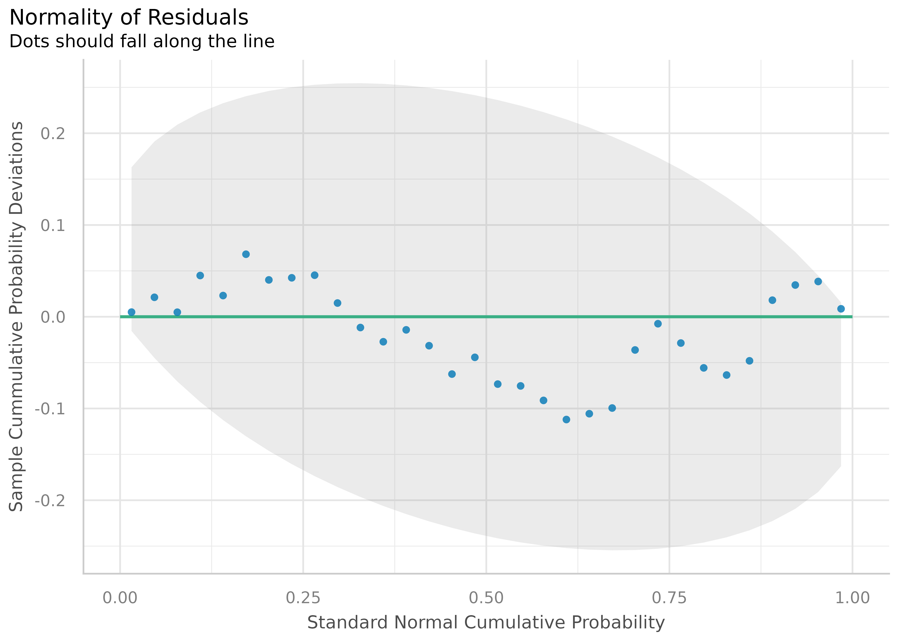
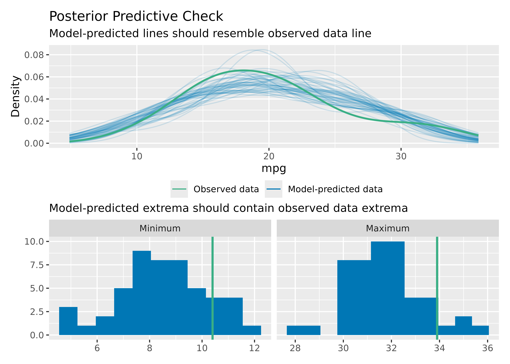

Checking Model Assumptions
Binned Residuals
(related function documentation)
Example where model is not a good fit.
model <- glm(vs ~ wt + mpg, data = mtcars, family = "binomial")
binned_residuals(model)
#> Warning: Probably bad model fit. Only about 50% of the residuals are inside the error bounds.
Example where model is a good fit.
mod <- glm(am ~ mpg + vs + cyl, data = mtcars, family = "binomial")
binned_residuals(mod)
#> Ok: About 100% of the residuals are inside the error bounds.
Check for Multicollinearity - Variance Inflation Factor
(related function documentation)
m <- lm(mpg ~ wt + cyl + gear + disp, data = mtcars)
result <- check_collinearity(m)
result
#> # Check for Multicollinearity
#>
#> Low Correlation
#>
#> Term VIF Increased SE Tolerance
#> gear 1.53 1.24 0.65
#>
#> Moderate Correlation
#>
#> Term VIF Increased SE Tolerance
#> wt 5.05 2.25 0.20
#> cyl 5.41 2.33 0.18
#> disp 9.97 3.16 0.10
plot(result)
library(glmmTMB)
data(Salamanders)
# create highly correlated pseudo-variable
set.seed(1)
Salamanders$cover2 <-
Salamanders$cover * runif(n = nrow(Salamanders), min = .7, max = 1.5)
# fit mixed model with zero-inflation
model <- glmmTMB(
count ~ spp + mined + cover + cover2 + (1 | site),
ziformula = ~ spp + mined,
family = truncated_poisson,
data = Salamanders
)
result <- check_collinearity(model)
result
plot(result)Check for Outliers
(related function documentation)
Bars indicating influential observations
# select only mpg and disp (continuous)
mt1 <- mtcars[, c(1, 3, 4)]
# create some fake outliers and attach outliers to main df
mt2 <- rbind(mt1, data.frame(mpg = c(37, 40), disp = c(300, 400), hp = c(110, 120)))
# fit model with outliers
model <- lm(disp ~ mpg + hp, data = mt2)
result <- check_outliers(model)
result
#> Warning: 2 outliers detected (cases 31, 34).
plot(result, type = "bars")

Check for Normal Distributed Residuals
(related function documentation)
model <- lm(mpg ~ wt + cyl + gear + disp, data = mtcars)
result <- check_normality(model)
#> OK: residuals appear as normally distributed (p = 0.230).


Check for Normal Distributed Random Effects
(related function documentation)
model <- lmer(Reaction ~ Days + (Days | Subject), sleepstudy)
result <- check_normality(model, effects = "random")
#> Group: Subject
#> (Intercept) OK: random effects appear as normally distributed (p = 0.428).
#> Days OK: random effects appear as normally distributed (p = 0.898).
plot(result)
#> [[1]]
Check for Heteroscedasticity
(related function documentation)
model <- lm(mpg ~ wt + cyl + gear + disp, data = mtcars)
result <- check_heteroscedasticity(model)
#> Warning: Heteroscedasticity (non-constant error variance) detected (p = 0.042).
plot(result)
Check for Homogeneity
(related function documentation)
model <- lm(len ~ supp + dose, data = ToothGrowth)
result <- check_homogeneity(model)
#> OK: Variances in each of the groups are the same (Bartlett Test, p = 0.226).
plot(result)
Posterior Predictive Checks
(related function documentation)

To check if the model properly captures the variation in the data, use check_range = TRUE:

Overall Model Check
(related function documentation)
model <- lmer(Reaction ~ Days + (Days | Subject), sleepstudy)
check_model(model)
check_model(model, panel = FALSE)


Note that not all checks supported in performance will be reported in this unified visual check. For example, for linear models, one needs to check the assumption that errors are not autocorrelated, but this check will not be shown in the visual check.
check_autocorrelation(lm(formula = wt ~ mpg, data = mtcars))
#> Warning: Autocorrelated residuals detected (p = 0.008).Compare Model Performances
(related function documentation)
compare_performance() computes indices of model performance for different models at once and hence allows comparison of indices across models. The plot()-method creates a “spiderweb” plot, where the different indices are normalized and larger values indicate better model performance. Hence, points closer to the center indicate worse fit indices.
data(iris)
lm1 <- lm(Sepal.Length ~ Species, data = iris)
lm2 <- lm(Sepal.Length ~ Species + Petal.Length, data = iris)
lm3 <- lm(Sepal.Length ~ Species * Sepal.Width, data = iris)
lm4 <- lm(Sepal.Length ~ Species * Sepal.Width + Petal.Length + Petal.Width, data = iris)
result <- compare_performance(lm1, lm2, lm3, lm4)
result
#> # Comparison of Model Performance Indices
#>
#> Name | Model | AIC | BIC | R2 | R2 (adj.) | RMSE | Sigma
#> --------------------------------------------------------------------
#> lm1 | lm | 231.452 | 243.494 | 0.619 | 0.614 | 0.510 | 0.515
#> lm2 | lm | 106.233 | 121.286 | 0.837 | 0.833 | 0.333 | 0.338
#> lm3 | lm | 187.092 | 208.167 | 0.727 | 0.718 | 0.431 | 0.440
#> lm4 | lm | 78.797 | 105.892 | 0.871 | 0.865 | 0.296 | 0.305
plot(result)
Model and Vector Properties
(related function documentation)
model <- lmer(Reaction ~ Days + (Days | Subject), sleepstudy)
result <- check_distribution(model)
result
#> # Distribution of Model Family
#>
#> Predicted Distribution of Residuals
#>
#> Distribution Probability
#> normal 91%
#> exponential 6%
#> lognormal 3%
#>
#> Predicted Distribution of Response
#>
#> Distribution Probability
#> lognormal 81%
#> gamma 12%
#> chi 3%
plot(result)
vec <- bayestestR::distribution_poisson(n = 500, lambda = 2.5)
result <- check_distribution(vec)
result
#> # Predicted Distribution of Vector
#>
#> Distribution Probability
#> poisson 72%
#> negative binomial 25%
#> binomial 3%
plot(result)
ROC curves
(related function documentation)
if (packageVersion("performance") > "0.7.0") {
data(iris)
set.seed(123)
iris$y <- rbinom(nrow(iris), size = 1, .3)
folds <- sample(nrow(iris), size = nrow(iris) / 8, replace = FALSE)
test_data <- iris[folds, ]
train_data <- iris[-folds, ]
model <- glm(y ~ Sepal.Length + Sepal.Width, data = train_data, family = "binomial")
result <- performance_roc(model, new_data = test_data)
result
plot(result)
}
You can also compare ROC curves for different models.
if (packageVersion("performance") > "0.7.0") {
set.seed(123)
library(bayestestR)
# creating models
m1 <- glm(vs ~ wt + mpg, data = mtcars, family = "binomial")
m2 <- glm(vs ~ wt + am + mpg, data = mtcars, family = "binomial")
# comparing their performances using the AUC curve
plot(performance_roc(m1, m2))
}